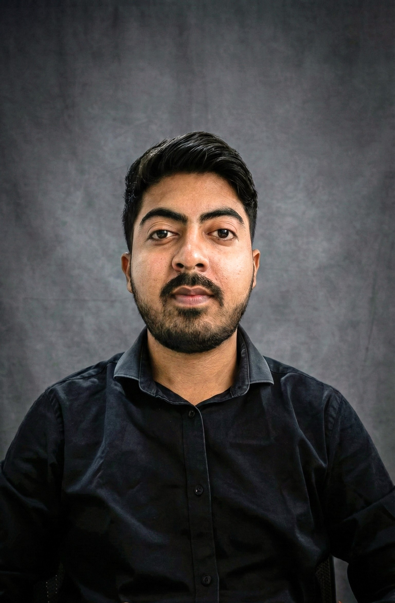

Infrastructure Engineer at Noventiq. AWS & Azure Certified. Bridging the gap between Development and Operations.

I am an Infrastructure Engineer at Noventiq with hands-on experience in enterprise server maintenance, disaster recovery, and identity systems.
I am actively transitioning to a DevOps role, combining strong networking fundamentals with practical skills in AWS, Docker containerization, and Python-based automation. I am passionate about building resilient microservices, implementing observability pipelines, and optimizing system reliability.
Validated expertise in Cloud Architecture and Fundamentals.
Noventiq